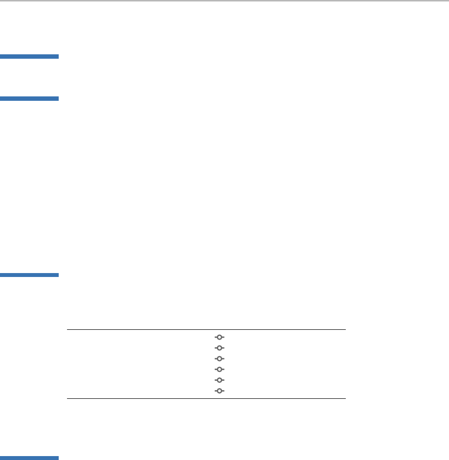

Remy Goldschmidt
Education
2014–2018 Bachelor of Science in Computer Science, University of Illinois at Urbana-Champaign.
Work Experience
Summer 2017 Software Engineering Intern, Awake Networks.
Will be working on problems in network security with Haskell and PureScript.
Summer 2016 Software Engineering Intern, Uber Advanced Technologies Center.
Working on infrastructure software for autonomous vehicles in C++.
Summer 2015 Research Intern, UIUC Formal Systems Laboratory.
Worked on software for executable semantics using rewrite logic.
Wrote Java to generate OCaml interpreters from semantic specifications.
| Java | + 19062 | − 15342
2013–2014 Research Intern, Columbia University Applied Physics / Applied Math Department.
Designed and built a sealed standing-wave thermoacoustic refrigerator.
Studied the effect of waveform input on efficiency in thermoacoustics.
| Haskell | + 4850 | − 2718
Activities
2014– Club, University of Illinois ACM SIGPLAN, Founder and chair.
Group for discussion of programming language theory and related subjects.
2011– Hobby, Open Source Programming.
0 k Java 185 + 19062 − 15342
ThomasEngine Racket 60 + 4142 − 2023
ThermoCalc Haskell 59 + 4850 − 2718
xprintidle-ng C 44 + 4308 − 12428
icfp-2015 Haskell 36 + 1381 − 1220
0 nixpkgs Nix 31 + 568 − 36
2014– Hobby, NixOS package maintainer.
Maintainer for g-wrap, guile-gnome, pdf2htmlEX, and souper.
Skills
Programming Haskell (6 yrs), Java, C/C++, Clojure, Racket, OCaml, Python, MATLAB, Mathematica
Software Linux (10 yrs), git, ROOT, Geant4
CAD SolidWorks, Siemens NX, EAGLE
Other Emacs, L
A
T
E
X, NixOS
Q taktoa@gmail.com • taktoa.me • taktoa • ¯ taktoa